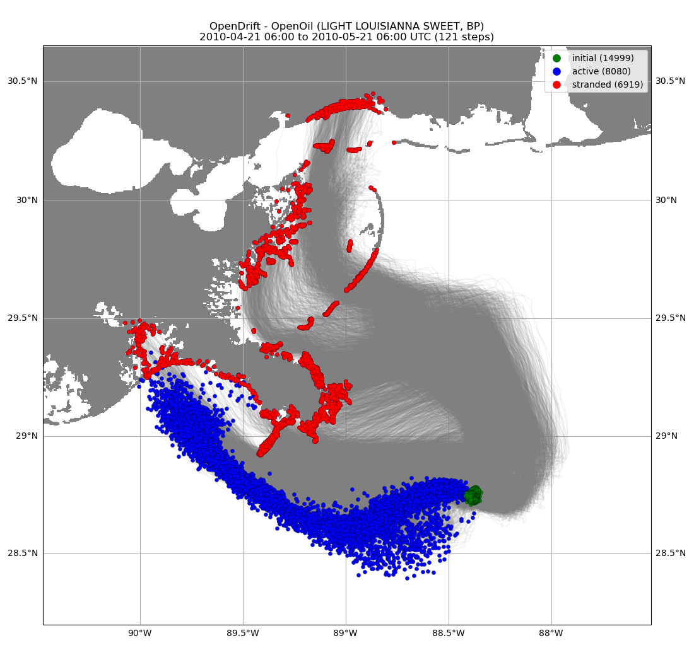
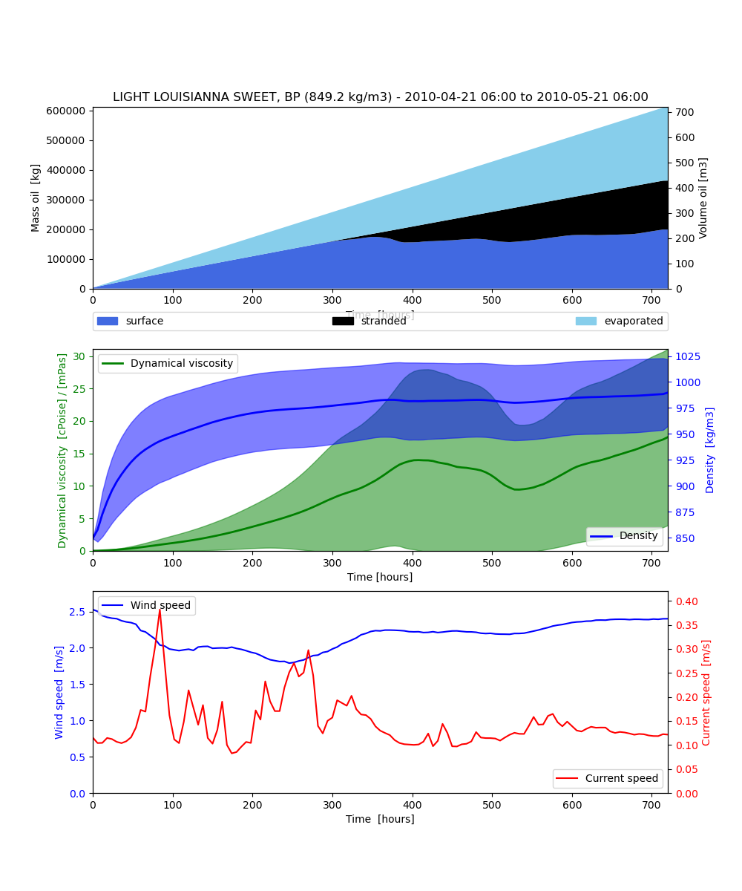

Note
Click here to download the full example code
Macondo
from datetime import datetime, timedelta
from opendrift.readers import reader_netCDF_CF_generic
from opendrift.models.openoil import OpenOil
This is a highly simplified 2D simulation, for illustration purpose only
o = OpenOil(loglevel=20) # Set loglevel to 0 for debug information
Out:
10:26:03 INFO opendrift.models.basemodel: OpenDriftSimulation initialised (version 1.8.3 / v1.8.3-26-g6187034)
For this datasource which does not contain standard_name, we impose a variable mapping
reader_globcurrent = None
try:
reader_globcurrent = reader_netCDF_CF_generic.Reader(
'http://tds0.ifremer.fr/thredds/dodsC/GLOBCURRENT-L4-CUREUL_HS-ALT_SUM-V03.0',
standard_name_mapping={'eastward_eulerian_current_velocity': 'x_sea_water_velocity',
'northward_eulerian_current_velocity': 'y_sea_water_velocity'})
except:
print('Thredds server not available, cannot run example')
if reader_globcurrent is not None:
reader_oceanwind = reader_netCDF_CF_generic.Reader('https://tds0.ifremer.fr/thredds/dodsC/CERSAT-GLO-CLIM_WIND_L4-OBS_FULL_TIME_SERIE')
# Add readers
o.add_reader([reader_globcurrent, reader_oceanwind])
# Seed some particles
lon = -88.387161; lat = 28.736669 # Macondo location
starttime = datetime(2010, 4, 21, 6, 0, 0) # 4 hours after explosion
time = [starttime, starttime + timedelta(hours=24*30)]
o.seed_elements(lon, lat, radius=0, number=15000, time=time, oil_type='LIGHT LOUISIANNA SWEET, BP')
# Run model
print(o)
o.run(duration=timedelta(days=30),
time_step=timedelta(hours=3),
time_step_output=timedelta(hours=6))
# Print and plot results
print(o)
o.plot(fast=True)
o.plot_oil_budget()
o.animation(fast=True)
- 
- 
Out:
10:26:03 INFO opendrift.readers.reader_netCDF_CF_generic: Opening dataset: http://tds0.ifremer.fr/thredds/dodsC/GLOBCURRENT-L4-CUREUL_HS-ALT_SUM-V03.0
10:26:04 INFO opendrift.readers.reader_netCDF_CF_generic: Grid coordinates are detected, but proj4 string not given: assuming latlong
10:26:04 INFO opendrift.readers.reader_netCDF_CF_generic: Opening dataset: https://tds0.ifremer.fr/thredds/dodsC/CERSAT-GLO-CLIM_WIND_L4-OBS_FULL_TIME_SERIE
10:26:06 INFO opendrift.readers.reader_netCDF_CF_generic: Grid coordinates are detected, but proj4 string not given: assuming latlong
10:26:06 INFO opendrift.readers.basereader: Variable x_wind will be rotated from eastward_wind
10:26:06 INFO opendrift.readers.basereader: Variable y_wind will be rotated from northward_wind
10:26:06 INFO opendrift.models.openoil.openoil: setting oil_type to: LIGHT LOUISIANNA SWEET, BP
10:26:06 INFO opendrift.models.openoil.adios.dirjs: Querying ADIOS database for oil: LIGHT LOUISIANNA SWEET, BP
10:26:06 INFO opendrift.models.openoil.openoil: Using density 846.0628439999999 and viscosity 9.845076846855232e-06 of oiltype LIGHT LOUISIANNA SWEET, BP
===========================
Model: OpenOil (OpenDrift version 1.8.3)
0 active Oil particles (0 deactivated, 15000 scheduled)
-------------------
Environment variables:
-----
x_sea_water_velocity
y_sea_water_velocity
1) http://tds0.ifremer.fr/thredds/dodsC/GLOBCURRENT-L4-CUREUL_HS-ALT_SUM-V03.0
-----
x_wind
y_wind
1) https://tds0.ifremer.fr/thredds/dodsC/CERSAT-GLO-CLIM_WIND_L4-OBS_FULL_TIME_SERIE
-----
Readers not added for the following variables:
land_binary_mask
ocean_mixed_layer_thickness
ocean_vertical_diffusivity
sea_floor_depth_below_sea_level
sea_ice_area_fraction
sea_ice_x_velocity
sea_ice_y_velocity
sea_surface_wave_mean_period_from_variance_spectral_density_second_frequency_moment
sea_surface_wave_period_at_variance_spectral_density_maximum
sea_surface_wave_significant_height
sea_surface_wave_stokes_drift_x_velocity
sea_surface_wave_stokes_drift_y_velocity
sea_water_salinity
sea_water_temperature
upward_sea_water_velocity
===========================
10:26:06 INFO opendrift.models.basemodel: Fallback values will be used for the following variables which have no readers:
10:26:06 INFO opendrift.models.basemodel: upward_sea_water_velocity: 0.000000
10:26:06 INFO opendrift.models.basemodel: sea_surface_wave_significant_height: 0.000000
10:26:06 INFO opendrift.models.basemodel: sea_surface_wave_stokes_drift_x_velocity: 0.000000
10:26:06 INFO opendrift.models.basemodel: sea_surface_wave_stokes_drift_y_velocity: 0.000000
10:26:06 INFO opendrift.models.basemodel: sea_surface_wave_period_at_variance_spectral_density_maximum: 0.000000
10:26:06 INFO opendrift.models.basemodel: sea_surface_wave_mean_period_from_variance_spectral_density_second_frequency_moment: 0.000000
10:26:06 INFO opendrift.models.basemodel: sea_ice_area_fraction: 0.000000
10:26:06 INFO opendrift.models.basemodel: sea_ice_x_velocity: 0.000000
10:26:06 INFO opendrift.models.basemodel: sea_ice_y_velocity: 0.000000
10:26:06 INFO opendrift.models.basemodel: sea_water_temperature: 10.000000
10:26:06 INFO opendrift.models.basemodel: sea_water_salinity: 34.000000
10:26:06 INFO opendrift.models.basemodel: sea_floor_depth_below_sea_level: 10000.000000
10:26:06 INFO opendrift.models.basemodel: ocean_vertical_diffusivity: 0.020000
10:26:06 INFO opendrift.models.basemodel: ocean_mixed_layer_thickness: 50.000000
10:26:06 INFO opendrift.models.basemodel: Adding a dynamical landmask with max. priority based on assumed maximum speed of 1.3 m/s. Adding a customised landmask may be faster...
10:26:06 WARNING opendrift.readers.reader_global_landmask: using the experimental RoaringLandmask
10:26:12 WARNING opendrift.readers.reader_global_landmask: skippoly and extent is not supported with RoaringLandmask
10:26:12 INFO opendrift.models.basemodel: Using existing reader for land_binary_mask
10:26:13 INFO opendrift.models.basemodel: All points are in ocean
10:26:14 INFO opendrift.models.openoil.openoil: Oil-water surface tension is 0.029852 Nm
10:26:14 INFO opendrift.models.basemodel: 2010-04-21 06:00:00 - step 1 of 240 - 63 active elements (0 deactivated)
10:26:17 INFO opendrift.models.basemodel: 2010-04-21 09:00:00 - step 2 of 240 - 125 active elements (0 deactivated)
10:26:18 INFO opendrift.models.basemodel: 2010-04-21 12:00:00 - step 3 of 240 - 188 active elements (0 deactivated)
10:26:19 INFO opendrift.models.basemodel: 2010-04-21 15:00:00 - step 4 of 240 - 250 active elements (0 deactivated)
10:26:20 INFO opendrift.models.basemodel: 2010-04-21 18:00:00 - step 5 of 240 - 313 active elements (0 deactivated)
10:26:21 INFO opendrift.models.basemodel: 2010-04-21 21:00:00 - step 6 of 240 - 375 active elements (0 deactivated)
10:26:22 INFO opendrift.models.basemodel: 2010-04-22 00:00:00 - step 7 of 240 - 438 active elements (0 deactivated)
10:26:23 INFO opendrift.models.basemodel: 2010-04-22 03:00:00 - step 8 of 240 - 500 active elements (0 deactivated)
10:26:24 INFO opendrift.models.basemodel: 2010-04-22 06:00:00 - step 9 of 240 - 563 active elements (0 deactivated)
10:26:25 INFO opendrift.models.basemodel: 2010-04-22 09:00:00 - step 10 of 240 - 625 active elements (0 deactivated)
10:26:25 INFO opendrift.models.basemodel: 2010-04-22 12:00:00 - step 11 of 240 - 688 active elements (0 deactivated)
10:26:26 INFO opendrift.models.basemodel: 2010-04-22 15:00:00 - step 12 of 240 - 750 active elements (0 deactivated)
10:26:27 INFO opendrift.models.basemodel: 2010-04-22 18:00:00 - step 13 of 240 - 813 active elements (0 deactivated)
10:26:28 INFO opendrift.models.basemodel: 2010-04-22 21:00:00 - step 14 of 240 - 875 active elements (0 deactivated)
10:26:29 INFO opendrift.models.basemodel: 2010-04-23 00:00:00 - step 15 of 240 - 938 active elements (0 deactivated)
10:26:30 INFO opendrift.models.basemodel: 2010-04-23 03:00:00 - step 16 of 240 - 1000 active elements (0 deactivated)
10:26:31 INFO opendrift.models.basemodel: 2010-04-23 06:00:00 - step 17 of 240 - 1063 active elements (0 deactivated)
10:26:32 INFO opendrift.models.basemodel: 2010-04-23 09:00:00 - step 18 of 240 - 1125 active elements (0 deactivated)
10:26:33 INFO opendrift.models.basemodel: 2010-04-23 12:00:00 - step 19 of 240 - 1188 active elements (0 deactivated)
10:26:34 INFO opendrift.models.basemodel: 2010-04-23 15:00:00 - step 20 of 240 - 1250 active elements (0 deactivated)
10:26:35 INFO opendrift.models.basemodel: 2010-04-23 18:00:00 - step 21 of 240 - 1313 active elements (0 deactivated)
10:26:36 INFO opendrift.models.basemodel: 2010-04-23 21:00:00 - step 22 of 240 - 1375 active elements (0 deactivated)
10:26:37 INFO opendrift.models.basemodel: 2010-04-24 00:00:00 - step 23 of 240 - 1438 active elements (0 deactivated)
10:26:38 INFO opendrift.models.basemodel: 2010-04-24 03:00:00 - step 24 of 240 - 1500 active elements (0 deactivated)
10:26:39 INFO opendrift.models.basemodel: 2010-04-24 06:00:00 - step 25 of 240 - 1563 active elements (0 deactivated)
10:26:39 INFO opendrift.models.basemodel: 2010-04-24 09:00:00 - step 26 of 240 - 1625 active elements (0 deactivated)
10:26:41 INFO opendrift.models.basemodel: 2010-04-24 12:00:00 - step 27 of 240 - 1688 active elements (0 deactivated)
10:26:42 INFO opendrift.models.basemodel: 2010-04-24 15:00:00 - step 28 of 240 - 1750 active elements (0 deactivated)
10:26:43 INFO opendrift.models.basemodel: 2010-04-24 18:00:00 - step 29 of 240 - 1813 active elements (0 deactivated)
10:26:44 INFO opendrift.models.basemodel: 2010-04-24 21:00:00 - step 30 of 240 - 1875 active elements (0 deactivated)
10:26:44 INFO opendrift.models.basemodel: 2010-04-25 00:00:00 - step 31 of 240 - 1938 active elements (0 deactivated)
10:26:45 INFO opendrift.models.basemodel: 2010-04-25 03:00:00 - step 32 of 240 - 2000 active elements (0 deactivated)
10:26:46 INFO opendrift.models.basemodel: 2010-04-25 06:00:00 - step 33 of 240 - 2063 active elements (0 deactivated)
10:26:47 INFO opendrift.models.basemodel: 2010-04-25 09:00:00 - step 34 of 240 - 2125 active elements (0 deactivated)
10:26:48 INFO opendrift.models.basemodel: 2010-04-25 12:00:00 - step 35 of 240 - 2188 active elements (0 deactivated)
10:26:49 INFO opendrift.models.basemodel: 2010-04-25 15:00:00 - step 36 of 240 - 2250 active elements (0 deactivated)
10:26:50 INFO opendrift.models.basemodel: 2010-04-25 18:00:00 - step 37 of 240 - 2313 active elements (0 deactivated)
10:26:51 INFO opendrift.models.basemodel: 2010-04-25 21:00:00 - step 38 of 240 - 2375 active elements (0 deactivated)
10:26:52 INFO opendrift.models.basemodel: 2010-04-26 00:00:00 - step 39 of 240 - 2438 active elements (0 deactivated)
10:26:53 INFO opendrift.models.basemodel: 2010-04-26 03:00:00 - step 40 of 240 - 2500 active elements (0 deactivated)
10:26:54 INFO opendrift.models.basemodel: 2010-04-26 06:00:00 - step 41 of 240 - 2563 active elements (0 deactivated)
10:26:55 INFO opendrift.models.basemodel: 2010-04-26 09:00:00 - step 42 of 240 - 2625 active elements (0 deactivated)
10:26:56 INFO opendrift.models.basemodel: 2010-04-26 12:00:00 - step 43 of 240 - 2688 active elements (0 deactivated)
10:26:57 INFO opendrift.models.basemodel: 2010-04-26 15:00:00 - step 44 of 240 - 2750 active elements (0 deactivated)
10:26:58 INFO opendrift.models.basemodel: 2010-04-26 18:00:00 - step 45 of 240 - 2813 active elements (0 deactivated)
10:26:59 INFO opendrift.models.basemodel: 2010-04-26 21:00:00 - step 46 of 240 - 2875 active elements (0 deactivated)
10:27:00 INFO opendrift.models.basemodel: 2010-04-27 00:00:00 - step 47 of 240 - 2938 active elements (0 deactivated)
10:27:01 INFO opendrift.models.basemodel: 2010-04-27 03:00:00 - step 48 of 240 - 3000 active elements (0 deactivated)
10:27:02 INFO opendrift.models.basemodel: 2010-04-27 06:00:00 - step 49 of 240 - 3063 active elements (0 deactivated)
10:27:03 INFO opendrift.models.basemodel: 2010-04-27 09:00:00 - step 50 of 240 - 3125 active elements (0 deactivated)
10:27:04 INFO opendrift.models.basemodel: 2010-04-27 12:00:00 - step 51 of 240 - 3188 active elements (0 deactivated)
10:27:05 INFO opendrift.models.basemodel: 2010-04-27 15:00:00 - step 52 of 240 - 3250 active elements (0 deactivated)
10:27:06 INFO opendrift.models.basemodel: 2010-04-27 18:00:00 - step 53 of 240 - 3313 active elements (0 deactivated)
10:27:07 INFO opendrift.models.basemodel: 2010-04-27 21:00:00 - step 54 of 240 - 3375 active elements (0 deactivated)
10:27:08 INFO opendrift.models.basemodel: 2010-04-28 00:00:00 - step 55 of 240 - 3438 active elements (0 deactivated)
10:27:09 INFO opendrift.models.basemodel: 2010-04-28 03:00:00 - step 56 of 240 - 3500 active elements (0 deactivated)
10:27:10 INFO opendrift.models.basemodel: 2010-04-28 06:00:00 - step 57 of 240 - 3563 active elements (0 deactivated)
10:27:12 INFO opendrift.models.basemodel: 2010-04-28 09:00:00 - step 58 of 240 - 3625 active elements (0 deactivated)
10:27:13 INFO opendrift.models.basemodel: 2010-04-28 12:00:00 - step 59 of 240 - 3688 active elements (0 deactivated)
10:27:14 INFO opendrift.models.basemodel: 2010-04-28 15:00:00 - step 60 of 240 - 3750 active elements (0 deactivated)
10:27:15 INFO opendrift.models.basemodel: 2010-04-28 18:00:00 - step 61 of 240 - 3813 active elements (0 deactivated)
10:27:16 INFO opendrift.models.basemodel: 2010-04-28 21:00:00 - step 62 of 240 - 3875 active elements (0 deactivated)
10:27:18 INFO opendrift.models.basemodel: 2010-04-29 00:00:00 - step 63 of 240 - 3938 active elements (0 deactivated)
10:27:19 INFO opendrift.models.basemodel: 2010-04-29 03:00:00 - step 64 of 240 - 4000 active elements (0 deactivated)
10:27:20 INFO opendrift.models.basemodel: 2010-04-29 06:00:00 - step 65 of 240 - 4063 active elements (0 deactivated)
10:27:21 INFO opendrift.models.basemodel: 2010-04-29 09:00:00 - step 66 of 240 - 4125 active elements (0 deactivated)
10:27:22 INFO opendrift.models.basemodel: 2010-04-29 12:00:00 - step 67 of 240 - 4188 active elements (0 deactivated)
10:27:23 INFO opendrift.models.basemodel: 2010-04-29 15:00:00 - step 68 of 240 - 4250 active elements (0 deactivated)
10:27:24 INFO opendrift.models.basemodel: 2010-04-29 18:00:00 - step 69 of 240 - 4313 active elements (0 deactivated)
10:27:25 INFO opendrift.models.basemodel: 2010-04-29 21:00:00 - step 70 of 240 - 4375 active elements (0 deactivated)
10:27:27 INFO opendrift.models.basemodel: 2010-04-30 00:00:00 - step 71 of 240 - 4438 active elements (0 deactivated)
10:27:28 INFO opendrift.models.basemodel: 2010-04-30 03:00:00 - step 72 of 240 - 4500 active elements (0 deactivated)
10:27:29 INFO opendrift.models.basemodel: 2010-04-30 06:00:00 - step 73 of 240 - 4563 active elements (0 deactivated)
10:27:30 INFO opendrift.models.basemodel: 2010-04-30 09:00:00 - step 74 of 240 - 4625 active elements (0 deactivated)
10:27:31 INFO opendrift.models.basemodel: 2010-04-30 12:00:00 - step 75 of 240 - 4688 active elements (0 deactivated)
10:27:32 INFO opendrift.models.basemodel: 2010-04-30 15:00:00 - step 76 of 240 - 4750 active elements (0 deactivated)
10:27:34 INFO opendrift.models.basemodel: 2010-04-30 18:00:00 - step 77 of 240 - 4813 active elements (0 deactivated)
10:27:35 INFO opendrift.models.basemodel: 2010-04-30 21:00:00 - step 78 of 240 - 4875 active elements (0 deactivated)
10:27:36 INFO opendrift.models.basemodel: 2010-05-01 00:00:00 - step 79 of 240 - 4938 active elements (0 deactivated)
10:27:38 INFO opendrift.models.basemodel: 2010-05-01 03:00:00 - step 80 of 240 - 5000 active elements (0 deactivated)
10:27:39 INFO opendrift.models.basemodel: 2010-05-01 06:00:00 - step 81 of 240 - 5063 active elements (0 deactivated)
10:27:40 INFO opendrift.models.basemodel: 2010-05-01 09:00:00 - step 82 of 240 - 5125 active elements (0 deactivated)
10:27:41 INFO opendrift.models.basemodel: 2010-05-01 12:00:00 - step 83 of 240 - 5188 active elements (0 deactivated)
10:27:43 INFO opendrift.models.basemodel: 2010-05-01 15:00:00 - step 84 of 240 - 5250 active elements (0 deactivated)
10:27:46 INFO opendrift.models.basemodel: 2010-05-01 18:00:00 - step 85 of 240 - 5313 active elements (0 deactivated)
10:27:47 INFO opendrift.models.basemodel: 2010-05-01 21:00:00 - step 86 of 240 - 5375 active elements (0 deactivated)
10:27:48 INFO opendrift.models.basemodel: 2010-05-02 00:00:00 - step 87 of 240 - 5438 active elements (0 deactivated)
10:27:49 INFO opendrift.models.basemodel: 2010-05-02 03:00:00 - step 88 of 240 - 5500 active elements (0 deactivated)
10:27:51 INFO opendrift.models.basemodel: 2010-05-02 06:00:00 - step 89 of 240 - 5563 active elements (0 deactivated)
10:27:52 INFO opendrift.models.basemodel: 2010-05-02 09:00:00 - step 90 of 240 - 5625 active elements (0 deactivated)
10:27:53 INFO opendrift.models.basemodel: 2010-05-02 12:00:00 - step 91 of 240 - 5688 active elements (0 deactivated)
10:27:54 INFO opendrift.models.basemodel: 2010-05-02 15:00:00 - step 92 of 240 - 5750 active elements (0 deactivated)
10:27:56 INFO opendrift.models.basemodel: 2010-05-02 18:00:00 - step 93 of 240 - 5813 active elements (0 deactivated)
10:27:57 INFO opendrift.models.basemodel: 2010-05-02 21:00:00 - step 94 of 240 - 5875 active elements (0 deactivated)
10:27:58 INFO opendrift.models.basemodel: 2010-05-03 00:00:00 - step 95 of 240 - 5938 active elements (0 deactivated)
10:28:00 INFO opendrift.models.basemodel: 2010-05-03 03:00:00 - step 96 of 240 - 6000 active elements (0 deactivated)
10:28:01 INFO opendrift.models.basemodel: 2010-05-03 06:00:00 - step 97 of 240 - 6061 active elements (2 deactivated)
10:28:03 INFO opendrift.models.basemodel: 2010-05-03 09:00:00 - step 98 of 240 - 6122 active elements (3 deactivated)
10:28:04 INFO opendrift.models.basemodel: 2010-05-03 12:00:00 - step 99 of 240 - 6180 active elements (8 deactivated)
10:28:05 INFO opendrift.models.basemodel: 2010-05-03 15:00:00 - step 100 of 240 - 6231 active elements (19 deactivated)
10:28:06 INFO opendrift.models.basemodel: 2010-05-03 18:00:00 - step 101 of 240 - 6285 active elements (28 deactivated)
10:28:07 INFO opendrift.models.basemodel: 2010-05-03 21:00:00 - step 102 of 240 - 6339 active elements (36 deactivated)
10:28:08 INFO opendrift.models.basemodel: 2010-05-04 00:00:00 - step 103 of 240 - 6388 active elements (50 deactivated)
10:28:10 INFO opendrift.models.basemodel: 2010-05-04 03:00:00 - step 104 of 240 - 6431 active elements (69 deactivated)
10:28:11 INFO opendrift.models.basemodel: 2010-05-04 06:00:00 - step 105 of 240 - 6476 active elements (87 deactivated)
10:28:13 INFO opendrift.models.basemodel: 2010-05-04 09:00:00 - step 106 of 240 - 6507 active elements (118 deactivated)
10:28:14 INFO opendrift.models.basemodel: 2010-05-04 12:00:00 - step 107 of 240 - 6541 active elements (147 deactivated)
10:28:15 INFO opendrift.models.basemodel: 2010-05-04 15:00:00 - step 108 of 240 - 6575 active elements (175 deactivated)
10:28:16 INFO opendrift.models.basemodel: 2010-05-04 18:00:00 - step 109 of 240 - 6610 active elements (203 deactivated)
10:28:17 INFO opendrift.models.basemodel: 2010-05-04 21:00:00 - step 110 of 240 - 6637 active elements (238 deactivated)
10:28:19 INFO opendrift.models.basemodel: 2010-05-05 00:00:00 - step 111 of 240 - 6675 active elements (263 deactivated)
10:28:20 INFO opendrift.models.basemodel: 2010-05-05 03:00:00 - step 112 of 240 - 6706 active elements (294 deactivated)
10:28:21 INFO opendrift.models.basemodel: 2010-05-05 06:00:00 - step 113 of 240 - 6749 active elements (314 deactivated)
10:28:23 INFO opendrift.models.basemodel: 2010-05-05 09:00:00 - step 114 of 240 - 6796 active elements (329 deactivated)
10:28:24 INFO opendrift.models.basemodel: 2010-05-05 12:00:00 - step 115 of 240 - 6846 active elements (342 deactivated)
10:28:25 INFO opendrift.models.basemodel: 2010-05-05 15:00:00 - step 116 of 240 - 6896 active elements (354 deactivated)
10:28:27 INFO opendrift.models.basemodel: 2010-05-05 18:00:00 - step 117 of 240 - 6944 active elements (369 deactivated)
10:28:29 INFO opendrift.models.basemodel: 2010-05-05 21:00:00 - step 118 of 240 - 6977 active elements (398 deactivated)
10:28:30 INFO opendrift.models.basemodel: 2010-05-06 00:00:00 - step 119 of 240 - 7008 active elements (430 deactivated)
10:28:31 INFO opendrift.models.basemodel: 2010-05-06 03:00:00 - step 120 of 240 - 7005 active elements (495 deactivated)
10:28:32 INFO opendrift.models.basemodel: 2010-05-06 06:00:00 - step 121 of 240 - 6995 active elements (567 deactivated)
10:28:34 INFO opendrift.models.basemodel: 2010-05-06 09:00:00 - step 122 of 240 - 6964 active elements (661 deactivated)
10:28:35 INFO opendrift.models.basemodel: 2010-05-06 12:00:00 - step 123 of 240 - 6925 active elements (762 deactivated)
10:28:37 INFO opendrift.models.basemodel: 2010-05-06 15:00:00 - step 124 of 240 - 6894 active elements (856 deactivated)
10:28:38 INFO opendrift.models.basemodel: 2010-05-06 18:00:00 - step 125 of 240 - 6856 active elements (956 deactivated)
10:28:39 INFO opendrift.models.basemodel: 2010-05-06 21:00:00 - step 126 of 240 - 6779 active elements (1096 deactivated)
10:28:40 INFO opendrift.models.basemodel: 2010-05-07 00:00:00 - step 127 of 240 - 6681 active elements (1256 deactivated)
10:28:42 INFO opendrift.models.basemodel: 2010-05-07 03:00:00 - step 128 of 240 - 6571 active elements (1429 deactivated)
10:28:43 INFO opendrift.models.basemodel: 2010-05-07 06:00:00 - step 129 of 240 - 6450 active elements (1612 deactivated)
10:28:44 INFO opendrift.models.basemodel: 2010-05-07 09:00:00 - step 130 of 240 - 6352 active elements (1773 deactivated)
10:28:46 INFO opendrift.models.basemodel: 2010-05-07 12:00:00 - step 131 of 240 - 6282 active elements (1905 deactivated)
10:28:47 INFO opendrift.models.basemodel: 2010-05-07 15:00:00 - step 132 of 240 - 6255 active elements (1995 deactivated)
10:28:48 INFO opendrift.models.basemodel: 2010-05-07 18:00:00 - step 133 of 240 - 6255 active elements (2057 deactivated)
10:28:50 INFO opendrift.models.basemodel: 2010-05-07 21:00:00 - step 134 of 240 - 6269 active elements (2106 deactivated)
10:28:51 INFO opendrift.models.basemodel: 2010-05-08 00:00:00 - step 135 of 240 - 6272 active elements (2165 deactivated)
10:28:52 INFO opendrift.models.basemodel: 2010-05-08 03:00:00 - step 136 of 240 - 6278 active elements (2222 deactivated)
10:28:54 INFO opendrift.models.basemodel: 2010-05-08 06:00:00 - step 137 of 240 - 6277 active elements (2285 deactivated)
10:28:55 INFO opendrift.models.basemodel: 2010-05-08 09:00:00 - step 138 of 240 - 6305 active elements (2320 deactivated)
10:28:56 INFO opendrift.models.basemodel: 2010-05-08 12:00:00 - step 139 of 240 - 6341 active elements (2346 deactivated)
10:28:57 INFO opendrift.models.basemodel: 2010-05-08 15:00:00 - step 140 of 240 - 6379 active elements (2371 deactivated)
10:28:59 INFO opendrift.models.basemodel: 2010-05-08 18:00:00 - step 141 of 240 - 6396 active elements (2416 deactivated)
10:29:00 INFO opendrift.models.basemodel: 2010-05-08 21:00:00 - step 142 of 240 - 6424 active elements (2451 deactivated)
10:29:02 INFO opendrift.models.basemodel: 2010-05-09 00:00:00 - step 143 of 240 - 6435 active elements (2502 deactivated)
10:29:04 INFO opendrift.models.basemodel: 2010-05-09 03:00:00 - step 144 of 240 - 6440 active elements (2560 deactivated)
10:29:05 INFO opendrift.models.basemodel: 2010-05-09 06:00:00 - step 145 of 240 - 6451 active elements (2611 deactivated)
10:29:07 INFO opendrift.models.basemodel: 2010-05-09 09:00:00 - step 146 of 240 - 6473 active elements (2652 deactivated)
10:29:08 INFO opendrift.models.basemodel: 2010-05-09 12:00:00 - step 147 of 240 - 6497 active elements (2690 deactivated)
10:29:09 INFO opendrift.models.basemodel: 2010-05-09 15:00:00 - step 148 of 240 - 6517 active elements (2733 deactivated)
10:29:10 INFO opendrift.models.basemodel: 2010-05-09 18:00:00 - step 149 of 240 - 6533 active elements (2779 deactivated)
10:29:11 INFO opendrift.models.basemodel: 2010-05-09 21:00:00 - step 150 of 240 - 6540 active elements (2835 deactivated)
10:29:13 INFO opendrift.models.basemodel: 2010-05-10 00:00:00 - step 151 of 240 - 6549 active elements (2888 deactivated)
10:29:14 INFO opendrift.models.basemodel: 2010-05-10 03:00:00 - step 152 of 240 - 6564 active elements (2936 deactivated)
10:29:16 INFO opendrift.models.basemodel: 2010-05-10 06:00:00 - step 153 of 240 - 6591 active elements (2971 deactivated)
10:29:17 INFO opendrift.models.basemodel: 2010-05-10 09:00:00 - step 154 of 240 - 6619 active elements (3006 deactivated)
10:29:19 INFO opendrift.models.basemodel: 2010-05-10 12:00:00 - step 155 of 240 - 6643 active elements (3044 deactivated)
10:29:20 INFO opendrift.models.basemodel: 2010-05-10 15:00:00 - step 156 of 240 - 6671 active elements (3079 deactivated)
10:29:21 INFO opendrift.models.basemodel: 2010-05-10 18:00:00 - step 157 of 240 - 6695 active elements (3117 deactivated)
10:29:22 INFO opendrift.models.basemodel: 2010-05-10 21:00:00 - step 158 of 240 - 6709 active elements (3166 deactivated)
10:29:24 INFO opendrift.models.basemodel: 2010-05-11 00:00:00 - step 159 of 240 - 6729 active elements (3208 deactivated)
10:29:25 INFO opendrift.models.basemodel: 2010-05-11 03:00:00 - step 160 of 240 - 6749 active elements (3251 deactivated)
10:29:26 INFO opendrift.models.basemodel: 2010-05-11 06:00:00 - step 161 of 240 - 6758 active elements (3304 deactivated)
10:29:28 INFO opendrift.models.basemodel: 2010-05-11 09:00:00 - step 162 of 240 - 6767 active elements (3358 deactivated)
10:29:29 INFO opendrift.models.basemodel: 2010-05-11 12:00:00 - step 163 of 240 - 6757 active elements (3430 deactivated)
10:29:31 INFO opendrift.models.basemodel: 2010-05-11 15:00:00 - step 164 of 240 - 6737 active elements (3513 deactivated)
10:29:33 INFO opendrift.models.basemodel: 2010-05-11 18:00:00 - step 165 of 240 - 6716 active elements (3596 deactivated)
10:29:34 INFO opendrift.models.basemodel: 2010-05-11 21:00:00 - step 166 of 240 - 6671 active elements (3704 deactivated)
10:29:35 INFO opendrift.models.basemodel: 2010-05-12 00:00:00 - step 167 of 240 - 6630 active elements (3807 deactivated)
10:29:36 INFO opendrift.models.basemodel: 2010-05-12 03:00:00 - step 168 of 240 - 6572 active elements (3928 deactivated)
10:29:37 INFO opendrift.models.basemodel: 2010-05-12 06:00:00 - step 169 of 240 - 6515 active elements (4047 deactivated)
10:29:38 INFO opendrift.models.basemodel: 2010-05-12 09:00:00 - step 170 of 240 - 6453 active elements (4172 deactivated)
10:29:40 INFO opendrift.models.basemodel: 2010-05-12 12:00:00 - step 171 of 240 - 6387 active elements (4300 deactivated)
10:29:41 INFO opendrift.models.basemodel: 2010-05-12 15:00:00 - step 172 of 240 - 6358 active elements (4392 deactivated)
10:29:42 INFO opendrift.models.basemodel: 2010-05-12 18:00:00 - step 173 of 240 - 6322 active elements (4490 deactivated)
10:29:43 INFO opendrift.models.basemodel: 2010-05-12 21:00:00 - step 174 of 240 - 6305 active elements (4570 deactivated)
10:29:45 INFO opendrift.models.basemodel: 2010-05-13 00:00:00 - step 175 of 240 - 6283 active elements (4654 deactivated)
10:29:46 INFO opendrift.models.basemodel: 2010-05-13 03:00:00 - step 176 of 240 - 6273 active elements (4727 deactivated)
10:29:47 INFO opendrift.models.basemodel: 2010-05-13 06:00:00 - step 177 of 240 - 6290 active elements (4772 deactivated)
10:29:49 INFO opendrift.models.basemodel: 2010-05-13 09:00:00 - step 178 of 240 - 6310 active elements (4815 deactivated)
10:29:50 INFO opendrift.models.basemodel: 2010-05-13 12:00:00 - step 179 of 240 - 6339 active elements (4848 deactivated)
10:29:51 INFO opendrift.models.basemodel: 2010-05-13 15:00:00 - step 180 of 240 - 6364 active elements (4886 deactivated)
10:29:52 INFO opendrift.models.basemodel: 2010-05-13 18:00:00 - step 181 of 240 - 6395 active elements (4917 deactivated)
10:29:53 INFO opendrift.models.basemodel: 2010-05-13 21:00:00 - step 182 of 240 - 6423 active elements (4952 deactivated)
10:29:55 INFO opendrift.models.basemodel: 2010-05-14 00:00:00 - step 183 of 240 - 6453 active elements (4984 deactivated)
10:29:56 INFO opendrift.models.basemodel: 2010-05-14 03:00:00 - step 184 of 240 - 6486 active elements (5014 deactivated)
10:29:57 INFO opendrift.models.basemodel: 2010-05-14 06:00:00 - step 185 of 240 - 6533 active elements (5029 deactivated)
10:29:59 INFO opendrift.models.basemodel: 2010-05-14 09:00:00 - step 186 of 240 - 6573 active elements (5052 deactivated)
10:30:00 INFO opendrift.models.basemodel: 2010-05-14 12:00:00 - step 187 of 240 - 6604 active elements (5083 deactivated)
10:30:01 INFO opendrift.models.basemodel: 2010-05-14 15:00:00 - step 188 of 240 - 6642 active elements (5108 deactivated)
10:30:03 INFO opendrift.models.basemodel: 2010-05-14 18:00:00 - step 189 of 240 - 6686 active elements (5126 deactivated)
10:30:04 INFO opendrift.models.basemodel: 2010-05-14 21:00:00 - step 190 of 240 - 6740 active elements (5135 deactivated)
10:30:06 INFO opendrift.models.basemodel: 2010-05-15 00:00:00 - step 191 of 240 - 6790 active elements (5147 deactivated)
10:30:07 INFO opendrift.models.basemodel: 2010-05-15 03:00:00 - step 192 of 240 - 6832 active elements (5168 deactivated)
10:30:08 INFO opendrift.models.basemodel: 2010-05-15 06:00:00 - step 193 of 240 - 6880 active elements (5182 deactivated)
10:30:09 INFO opendrift.models.basemodel: 2010-05-15 09:00:00 - step 194 of 240 - 6928 active elements (5197 deactivated)
10:30:10 INFO opendrift.models.basemodel: 2010-05-15 12:00:00 - step 195 of 240 - 6973 active elements (5214 deactivated)
10:30:12 INFO opendrift.models.basemodel: 2010-05-15 15:00:00 - step 196 of 240 - 7016 active elements (5234 deactivated)
10:30:13 INFO opendrift.models.basemodel: 2010-05-15 18:00:00 - step 197 of 240 - 7067 active elements (5245 deactivated)
10:30:15 INFO opendrift.models.basemodel: 2010-05-15 21:00:00 - step 198 of 240 - 7110 active elements (5265 deactivated)
10:30:16 INFO opendrift.models.basemodel: 2010-05-16 00:00:00 - step 199 of 240 - 7150 active elements (5287 deactivated)
10:30:17 INFO opendrift.models.basemodel: 2010-05-16 03:00:00 - step 200 of 240 - 7197 active elements (5303 deactivated)
10:30:19 INFO opendrift.models.basemodel: 2010-05-16 06:00:00 - step 201 of 240 - 7228 active elements (5334 deactivated)
10:30:20 INFO opendrift.models.basemodel: 2010-05-16 09:00:00 - step 202 of 240 - 7257 active elements (5368 deactivated)
10:30:21 INFO opendrift.models.basemodel: 2010-05-16 12:00:00 - step 203 of 240 - 7275 active elements (5412 deactivated)
10:30:23 INFO opendrift.models.basemodel: 2010-05-16 15:00:00 - step 204 of 240 - 7281 active elements (5469 deactivated)
10:30:24 INFO opendrift.models.basemodel: 2010-05-16 18:00:00 - step 205 of 240 - 7284 active elements (5528 deactivated)
10:30:26 INFO opendrift.models.basemodel: 2010-05-16 21:00:00 - step 206 of 240 - 7289 active elements (5586 deactivated)
10:30:27 INFO opendrift.models.basemodel: 2010-05-17 00:00:00 - step 207 of 240 - 7304 active elements (5633 deactivated)
10:30:29 INFO opendrift.models.basemodel: 2010-05-17 03:00:00 - step 208 of 240 - 7299 active elements (5701 deactivated)
10:30:30 INFO opendrift.models.basemodel: 2010-05-17 06:00:00 - step 209 of 240 - 7304 active elements (5758 deactivated)
10:30:32 INFO opendrift.models.basemodel: 2010-05-17 09:00:00 - step 210 of 240 - 7284 active elements (5841 deactivated)
10:30:33 INFO opendrift.models.basemodel: 2010-05-17 12:00:00 - step 211 of 240 - 7269 active elements (5918 deactivated)
10:30:34 INFO opendrift.models.basemodel: 2010-05-17 15:00:00 - step 212 of 240 - 7270 active elements (5980 deactivated)
10:30:36 INFO opendrift.models.basemodel: 2010-05-17 18:00:00 - step 213 of 240 - 7281 active elements (6031 deactivated)
10:30:37 INFO opendrift.models.basemodel: 2010-05-17 21:00:00 - step 214 of 240 - 7283 active elements (6092 deactivated)
10:30:38 INFO opendrift.models.basemodel: 2010-05-18 00:00:00 - step 215 of 240 - 7290 active elements (6147 deactivated)
10:30:40 INFO opendrift.models.basemodel: 2010-05-18 03:00:00 - step 216 of 240 - 7300 active elements (6200 deactivated)
10:30:41 INFO opendrift.models.basemodel: 2010-05-18 06:00:00 - step 217 of 240 - 7308 active elements (6254 deactivated)
10:30:43 INFO opendrift.models.basemodel: 2010-05-18 09:00:00 - step 218 of 240 - 7334 active elements (6291 deactivated)
10:30:44 INFO opendrift.models.basemodel: 2010-05-18 12:00:00 - step 219 of 240 - 7334 active elements (6353 deactivated)
10:30:46 INFO opendrift.models.basemodel: 2010-05-18 15:00:00 - step 220 of 240 - 7341 active elements (6409 deactivated)
10:30:47 INFO opendrift.models.basemodel: 2010-05-18 18:00:00 - step 221 of 240 - 7356 active elements (6456 deactivated)
10:30:48 INFO opendrift.models.basemodel: 2010-05-18 21:00:00 - step 222 of 240 - 7362 active elements (6513 deactivated)
10:30:50 INFO opendrift.models.basemodel: 2010-05-19 00:00:00 - step 223 of 240 - 7371 active elements (6566 deactivated)
10:30:51 INFO opendrift.models.basemodel: 2010-05-19 03:00:00 - step 224 of 240 - 7383 active elements (6617 deactivated)
10:30:53 INFO opendrift.models.basemodel: 2010-05-19 06:00:00 - step 225 of 240 - 7393 active elements (6669 deactivated)
10:30:54 INFO opendrift.models.basemodel: 2010-05-19 09:00:00 - step 226 of 240 - 7405 active elements (6720 deactivated)
10:30:55 INFO opendrift.models.basemodel: 2010-05-19 12:00:00 - step 227 of 240 - 7426 active elements (6761 deactivated)
10:30:57 INFO opendrift.models.basemodel: 2010-05-19 15:00:00 - step 228 of 240 - 7459 active elements (6791 deactivated)
10:30:58 INFO opendrift.models.basemodel: 2010-05-19 18:00:00 - step 229 of 240 - 7500 active elements (6812 deactivated)
10:30:59 INFO opendrift.models.basemodel: 2010-05-19 21:00:00 - step 230 of 240 - 7545 active elements (6830 deactivated)
10:31:01 INFO opendrift.models.basemodel: 2010-05-20 00:00:00 - step 231 of 240 - 7595 active elements (6842 deactivated)
10:31:03 INFO opendrift.models.basemodel: 2010-05-20 03:00:00 - step 232 of 240 - 7650 active elements (6850 deactivated)
10:31:04 INFO opendrift.models.basemodel: 2010-05-20 06:00:00 - step 233 of 240 - 7705 active elements (6857 deactivated)
10:31:05 INFO opendrift.models.basemodel: 2010-05-20 09:00:00 - step 234 of 240 - 7765 active elements (6860 deactivated)
10:31:07 INFO opendrift.models.basemodel: 2010-05-20 12:00:00 - step 235 of 240 - 7820 active elements (6867 deactivated)
10:31:08 INFO opendrift.models.basemodel: 2010-05-20 15:00:00 - step 236 of 240 - 7874 active elements (6876 deactivated)
10:31:10 INFO opendrift.models.basemodel: 2010-05-20 18:00:00 - step 237 of 240 - 7930 active elements (6882 deactivated)
10:31:11 INFO opendrift.models.basemodel: 2010-05-20 21:00:00 - step 238 of 240 - 7985 active elements (6890 deactivated)
10:31:13 INFO opendrift.models.basemodel: 2010-05-21 00:00:00 - step 239 of 240 - 8040 active elements (6897 deactivated)
10:31:14 INFO opendrift.models.basemodel: 2010-05-21 03:00:00 - step 240 of 240 - 8091 active elements (6908 deactivated)
10:31:15 INFO opendrift.models.basemodel: Removing 1 unseeded elements from history array
===========================
--------------------
Reader performance:
--------------------
http://tds0.ifremer.fr/thredds/dodsC/GLOBCURRENT-L4-CUREUL_HS-ALT_SUM-V03.0
0:03:00.8 total
0:00:00.0 preparing
0:03:00.7 reading
0:00:00.2 interpolation
0:00:00.0 interpolation_time
0:00:00.0 masking
--------------------
https://tds0.ifremer.fr/thredds/dodsC/CERSAT-GLO-CLIM_WIND_L4-OBS_FULL_TIME_SERIE
0:00:03.6 total
0:00:00.0 preparing
0:00:03.6 reading
0:00:00.4 interpolation
0:00:00.0 interpolation_time
0:00:00.0 masking
--------------------
global_landmask
0:00:00.1 total
0:00:00.0 preparing
0:00:00.1 reading
0:00:00.0 masking
--------------------
Performance:
5:14.4 total time
3.0 configuration
8.2 preparing main loop
6.8 making dynamical landmask
0.0 moving elements to ocean
3:07.5 readers
0.2 global_landmask
1.7 postprocessing
5:01.4 main loop
3:00.9 http://tds0.ifremer.fr/thredds/dodsC/GLOBCURRENT-L4-CUREUL_HS-ALT_SUM-V03.0
3.8 https://tds0.ifremer.fr/thredds/dodsC/CERSAT-GLO-CLIM_WIND_L4-OBS_FULL_TIME_SERIE
1:47.7 updating elements
25.4 oil weathering
0.0 updating viscosities
0.0 updating densities
24.9 evaporation
0.1 emulsification
0.2 dispersion
1:19.9 vertical mixing
1.6 cleaning up
--------------------
===========================
Model: OpenOil (OpenDrift version 1.8.3)
8075 active Oil particles (6924 deactivated, 1 scheduled)
-------------------
Environment variables:
-----
x_sea_water_velocity
y_sea_water_velocity
1) http://tds0.ifremer.fr/thredds/dodsC/GLOBCURRENT-L4-CUREUL_HS-ALT_SUM-V03.0
-----
x_wind
y_wind
1) https://tds0.ifremer.fr/thredds/dodsC/CERSAT-GLO-CLIM_WIND_L4-OBS_FULL_TIME_SERIE
-----
land_binary_mask
1) global_landmask
-----
Readers not added for the following variables:
ocean_mixed_layer_thickness
ocean_vertical_diffusivity
sea_floor_depth_below_sea_level
sea_ice_area_fraction
sea_ice_x_velocity
sea_ice_y_velocity
sea_surface_wave_mean_period_from_variance_spectral_density_second_frequency_moment
sea_surface_wave_period_at_variance_spectral_density_maximum
sea_surface_wave_significant_height
sea_surface_wave_stokes_drift_x_velocity
sea_surface_wave_stokes_drift_y_velocity
sea_water_salinity
sea_water_temperature
upward_sea_water_velocity
Time:
Start: 2010-04-21 06:00:00
Present: 2010-05-21 06:00:00
Calculation steps: 240 * 3:00:00 - total time: 30 days, 0:00:00
Output steps: 121 * 6:00:00
===========================
10:31:17 WARNING opendrift.models.basemodel: Plotting fast. This will make your plots less accurate.
10:31:17 WARNING opendrift.readers.reader_global_landmask: skippoly and extent is not supported with RoaringLandmask
10:31:49 WARNING opendrift.models.basemodel: Plotting fast. This will make your plots less accurate.
10:31:49 WARNING opendrift.readers.reader_global_landmask: skippoly and extent is not supported with RoaringLandmask
10:31:52 INFO opendrift.models.basemodel: Saving animation to /root/project/docs/source/gallery/animations/example_macondo_0.gif...
10:32:20 INFO opendrift.models.basemodel: Time to make animation: 0:00:30.904502
Total running time of the script: ( 6 minutes 27.520 seconds)